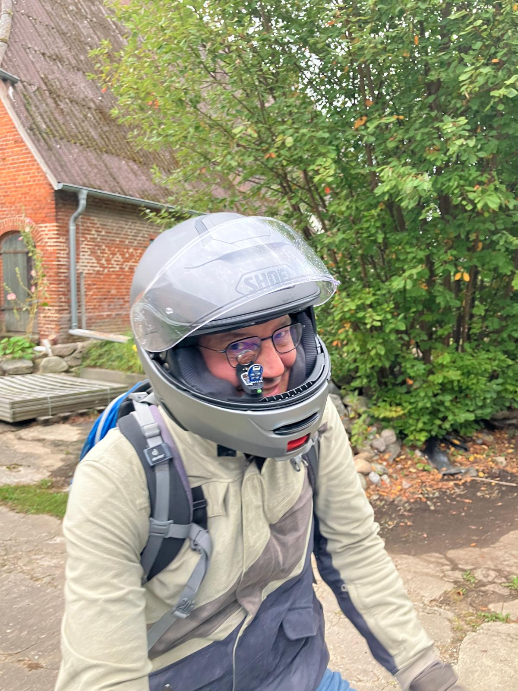

Angefangen hat alles eigentlich mit einem eigenen Fahrzeugprojekt: einer stark modifizierten Vespa mit MaxxECU-Einspritzung.
Dafür brauchte ich eine wasserfeste CAN-Bus-Anzeige. Damit stand irgendwann die Entscheidung im Raum: entweder ein bestehendes Produkt aufwendig umzubauen — oder direkt selbst etwas Eigenes zu entwickeln. Wofür ich mich entschieden habe, seht ihr ja.
Die ersten Versionen entstanden noch auf Basis kleiner Entwicklungsboards mit runden Displays. Ursprünglich war das Ganze nur als persönliches Bastelprojekt gedacht: ein paar Gauge-Layouts, etwas CAN-Auswertung und ein hübsches rundes Display.
Gerade beim Display selbst war aber schnell klar, dass etwas Moderneres her musste: hohe Pixeldichte, kräftiger Kontrast, flüssige Darstellung und eine grafische Oberfläche, die eher wie ein echtes Fahrzeuginstrument wirkt und nicht wie ein kleines 128×128-Pixel-Debugdisplay.
Aber wie das bei solchen Projekten manchmal läuft, ist das Hobby irgendwann ziemlich aus dem Ruder gelaufen.
Mit der Zeit kamen immer neue Ideen dazu: frei konfigurierbare Screens, DBC-Import, BLE-Navigation, WLAN-Webinterface, verschiedene Displaygrößen, Touch-Bedienung, externe Taster, Helligkeitssteuerung, Firmware-Updates und vieles mehr.
Irgendwann war klar: Wenn das Gerät nicht nur auf dem eigenen Schreibtisch funktionieren soll, sondern auch bei anderen zuverlässig eingesetzt werden kann, dann braucht das Ganze echten Produktcharakter.
Und genau dort beginnt plötzlich eine völlig andere Welt. Dann geht es nicht mehr nur um Firmware und schöne Gauge-Layouts, sondern auch um elektrische Sicherheit, Funktechnik, EMV, Spannungsversorgung, CE-Konformität, Dokumentation, WEEE-Registrierung und Verpackungsrichtlinien.
Dabei merkt man ziemlich schnell, dass zwischen einem funktionierenden Entwicklungsaufbau und einem realen Produkt ein gewaltiger Unterschied liegt.
Das aktuell angebotene CanDisp 52 ist ausdrücklich als Anzeigeeinheit für den geschützten Innenraumeinsatz vorgesehen und nicht als wasserfeste Motorradvariante ausgeführt.
Trotzdem war genau das am Ende vermutlich der spannendste Teil an dem gesamten Projekt. Aus einer kleinen Idee wurde Schritt für Schritt ein vollständiges System, das heute flexibel in unterschiedlichsten CAN-basierten Fahrzeugen eingesetzt werden kann.
